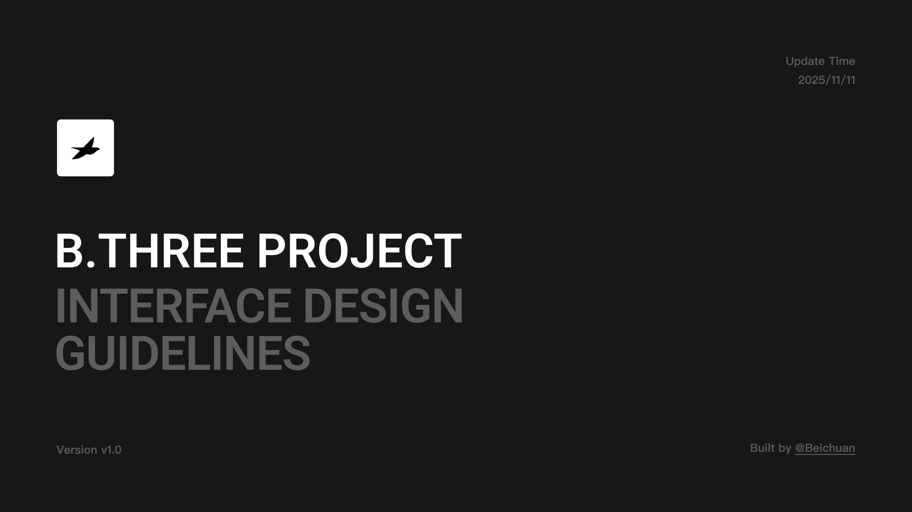

组织镜头、3D 渲染与生成规则，经过检查后进入模板库。
01 / AI PRODUCT CASE STUDY
B.THREE.AI CONTENT PLATFORM
将复杂的 3D 与 AI 工作流，转化为清晰、可控、可交付的商品内容生产体验。
B.THREE 面向品牌与电商内容团队，将 3D 商品资产、内容模板与 AI 图片 / 视频生成整合成一条可交付的生产链路。我负责从需求、信息架构、交互到设计系统与开发落地的完整产品设计。
先了解这个项目 ↓02 / PROJECT OVERVIEW
一套面向品牌内容团队的 B 端 AI 生产平台。
用户先从内容模板确认想要的画面，再在模板中选择系统示例模型、已有商品模型或本地上传；没有模型时，也可以进入扫描建模服务。模型就绪后，用户完成位置与输出配置，生成图片或视频，并将结果沉淀为项目资产。
- 项目类型
- B 端 AI 商品内容生产平台
- 服务对象
- 品牌方｜电商内容团队｜平台服务人员
- 项目阶段
- 从 0 到 1｜正式上线｜持续迭代
- 我的职责
- 产品体验｜UI 视觉｜设计规范｜前端验证
一套产品，连接内容供给与真实生产。
从目标画面出发，在需要时选择系统示例或自己的模型。
处理渲染、任务状态、失败恢复、版本选择与下载交付。
03 / PRODUCT CHALLENGES
问题不在于能不能生成，而在于怎样把生成变成生产。
品牌与运营用户不需要理解底层 3D 和 AI 技术。他们需要先看见目标效果，快速开始，再在必要时获得足够控制。
让用户先看到可能的结果，再逐步补齐商品模型与生成配置。
先准备资产，用户很难想象结果
如果任务从上传与建模开始，用户要先投入成本，却还不知道能做出什么。入口需要先展示模板和产出方向。
普通用户也需要控制专业的 3D 结果
位置、旋转、缩放和输出规格不能全部隐藏，也不能直接暴露技术参数，需要被转译成可预览、可判断的操作。
点击生成，不代表任务已经完成
加载、预处理、排队、失败和多版本结果都需要明确反馈，用户还要知道如何修正、重试、选择与交付。
04 / KEY DESIGN DECISIONS
三个决定，把生成能力变成生产路径。
每个决定都对应一个真实阻力、一组界面证据，以及用户能够继续完成的下一步。

DECISION 01 / ENTRY
先选择内容模板，再用示例或自己的模型开始。
用户先看见可以产出的画面；没有准备资产时可直接使用系统示例模型，进入真实任务后再选择模型库、本地上传或扫描建模。
- 解决
- 避免用户在还看不到结果时，就先处理上传与建模成本。
- 结果
- 任务入口从“我有什么资产”转向“我想做什么内容”，试用与生产仍共用同一条路。
05 / DELIVERED PRODUCT FLOW
从想要的画面出发，逐步完成真实生产。
点击下方五个阶段，查看用户如何从模板进入任务，并在需要时选择系统示例、自己的模型或扫描服务。
设计决策让模板成为任务入口，先帮助用户判断内容方向，再逐步暴露模型与生成配置。
06 / AFTER LAUNCH
上线不是终点，真实使用重新定义下一轮设计。
12 月的编辑器优化集中处理位置、角度与速度问题。我们没有增加更多功能，而是让关键操作更容易理解、等待过程更有反馈。
RELEASE12.15 正式上线
01模型朝向难以判断操作控制
真实问题上传模型后，用户难以判断商品朝向是否正确。
设计回应增加朝向引导与角度调整，并让模型查看默认回到正对视角。02加载过程容易被理解为失败状态反馈
真实问题预览暂未出现时，用户无法区分等待、失败或不可继续。
设计回应展示模型预处理状态，并明确说明场景加载中仍可继续生成。03高密度编辑界面干扰任务操作效率
真实问题工具和说明同时展开，挤压核心画面并增加视觉干扰。
设计回应默认收起右侧工具栏，补充格式提示，Scene Video 在 hover 时播放预览。04预览与生成界面出现卡顿性能体验
真实问题高帧率没有增加判断价值，却让预览与生成界面出现卡顿。
设计回应将帧率从 30 调整为 15，在保留必要动态信息的同时降低资源消耗。07 / SYSTEM & SCALE
把复杂生产规则，沉淀为可以共同执行的界面语言。
规范不是项目末尾的视觉总结，而是设计、研发与验收持续协作的工作底稿。六份真实交付从基础语言延伸到业务模块，形成一套可持续执行的产品规则。
INTERFACE DESIGN GUIDELINES真实规范交付档案
01 / 06选择目录查看对应原稿

查看原稿 ↗以真实规范交付为索引，覆盖颜色、文字、图标、组件状态与核心业务页面。
08 / DELIVERY & OUTCOME
从复杂技术能力，到真实可用的生产工具。
我负责从需求理解、信息架构、交互与 UI，到规范、前端验证和跨团队落地；结果以已经交付的产品事实为准。
- 01
完成正式上线与开发交付
B.THREE 已完成开发交付并正式上线，核心链路覆盖模板选择、模型准备、实时调整、内容生成和项目资产沉淀。
- 02
进入真实品牌项目
平台从内部验证进入实际商品内容生产场景，开始承担真实的图片与视频内容任务。
- 03
建立可持续扩展的产品基础
统一的业务对象、状态和组件体系，让新的模型来源、模板与生成能力能够沿用同一条产品路径继续扩展。